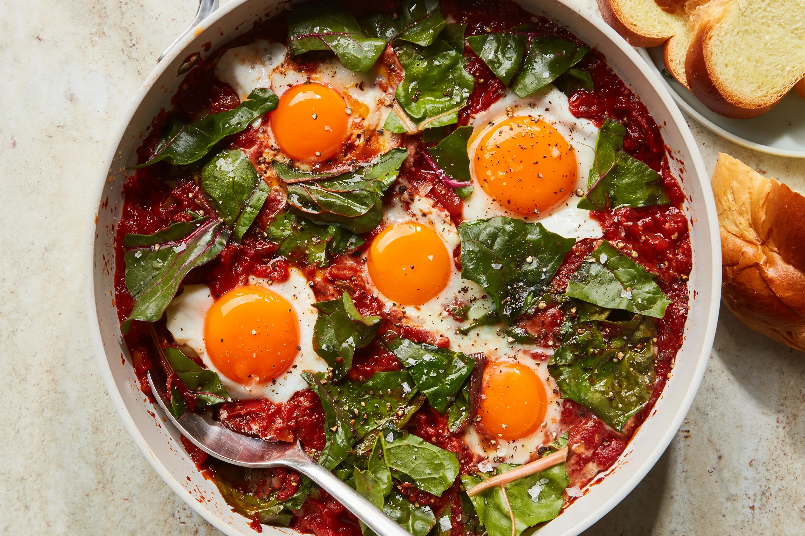

Shakshuka

Ingredients
- 2 tablespoons olive oil
- 1 large onion, sliced
- 1 large red bell pepper, sliced
- 2 cloves garlic, minced
- 1 teaspoon cumin
- 1 teaspoon paprika
- 1/8 teaspoon cayenne pepper
- 1 can (28 ounces) crushed tomatoes
- Salt and pepper to taste
- 6 large eggs
- Fresh parsley, chopped for garnish
Instructions
- Heat the olive oil in a large skillet or frying pan over medium heat.
- Add the onion and bell pepper to the pan and sauté until soft.
- Add the garlic, cumin, paprika, and cayenne to the pan and stir well.
- Add the crushed tomatoes to the pan and season with salt and pepper. Let the mixture simmer for 10-15 minutes.
- Make wells in the tomato mixture and crack an egg into each well. Cover the pan and let the eggs cook to your desired level of doneness.
- Garnish with fresh parsley before serving.
Time
- Preparation Time: 15 minutes
- Cooking Time: 20 minutes
- Total Time: 35 minutes
Enjoy Cooking!